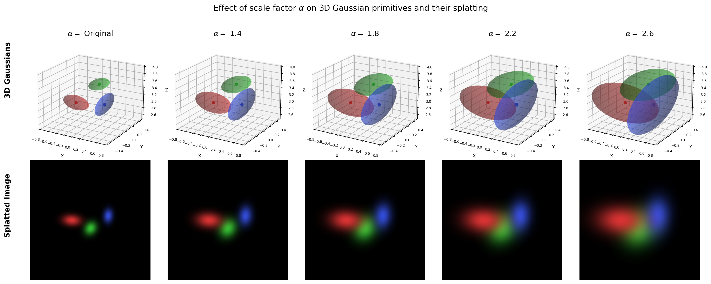
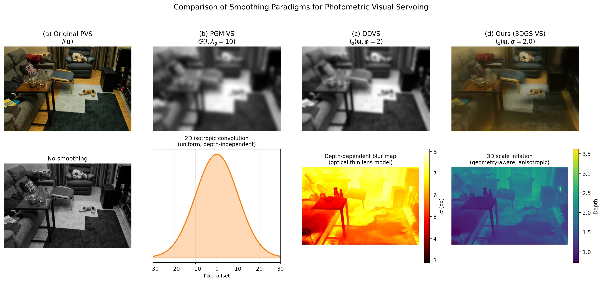
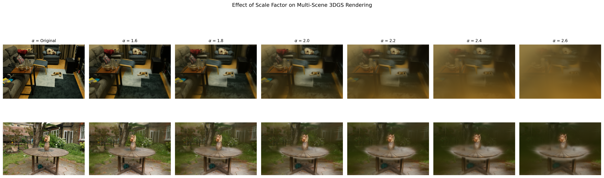
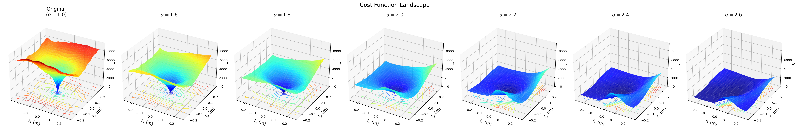
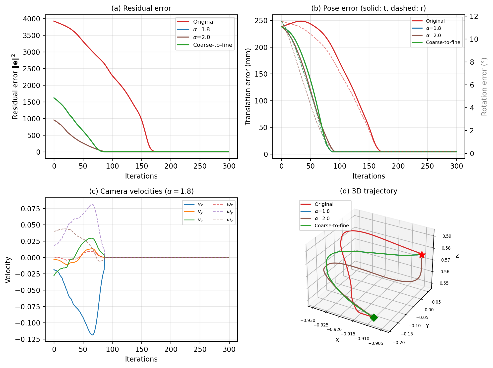
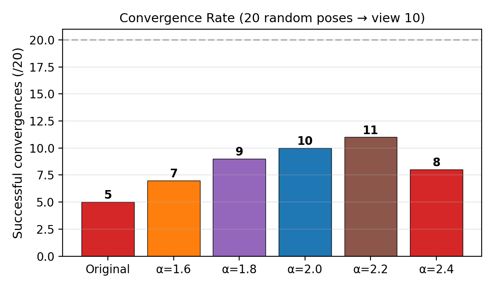
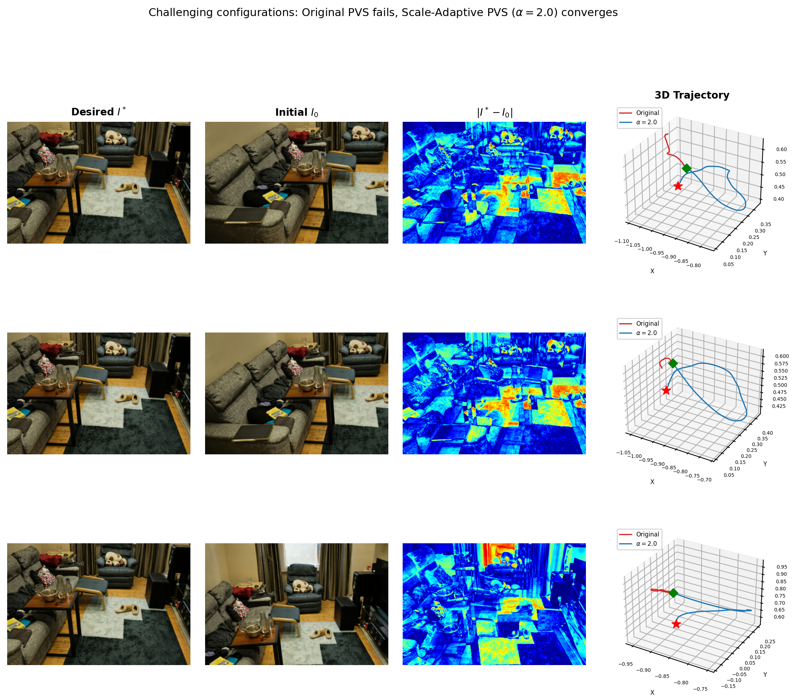

Enlarging the convergence domain by inflating Gaussian scales in 3D
Key idea: Inflating the scales of 3D Gaussians in a Gaussian Splatting scene model smooths the rendered images, widening the convergence basin of photometric visual servoing (PVS). This enables convergence from initial poses where standard PVS fails, while maintaining sub-centimeter positioning accuracy.

Our approach operates in 3D scene space, unlike prior methods that smooth in 2D image space (PGM-VS) or via optical models (DDVS). This produces depth-dependent, anisotropic, and occlusion-aware smoothing.


Inflating Gaussian scales smooths the photometric cost function, suppressing local minima and creating a convex basin around the desired pose.



| Scene | Original | α=1.6 | α=1.8 | α=2.0 | α=2.2 | α=2.4 |
|---|---|---|---|---|---|---|
| Room (goal 10) | 5/20 | 7/20 | 9/20 | 10/20 | 11/20 | 8/20 |
| Room (goal 40) | 5/20 | 6/20 | 6/20 | 6/20 | 7/20 | 4/20 |
| Garden | 0/20 | 0/20 | 4/20 | 8/20 | 15/20 | 17/20 |
Cases where original PVS fails but scale-adaptive PVS (α=2.0) converges.

Side-by-side comparison of visual servoing convergence: desired | current | difference images.
@article{alj2026scaling,
title={Scale-Adaptive Photometric Visual Servoing in 3D Gaussian Splatting},
author={Alj, Youssef and Caron, Guillaume},
journal={IEEE Transactions on Robotics (submitted)},
year={2026}
}